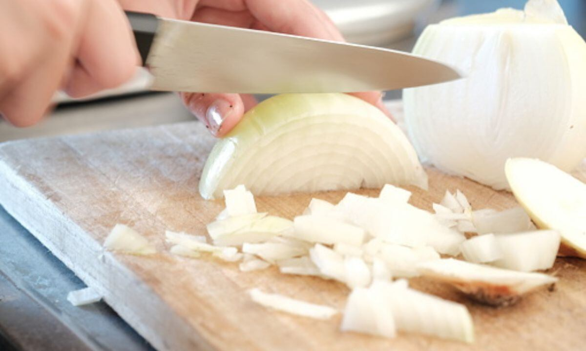
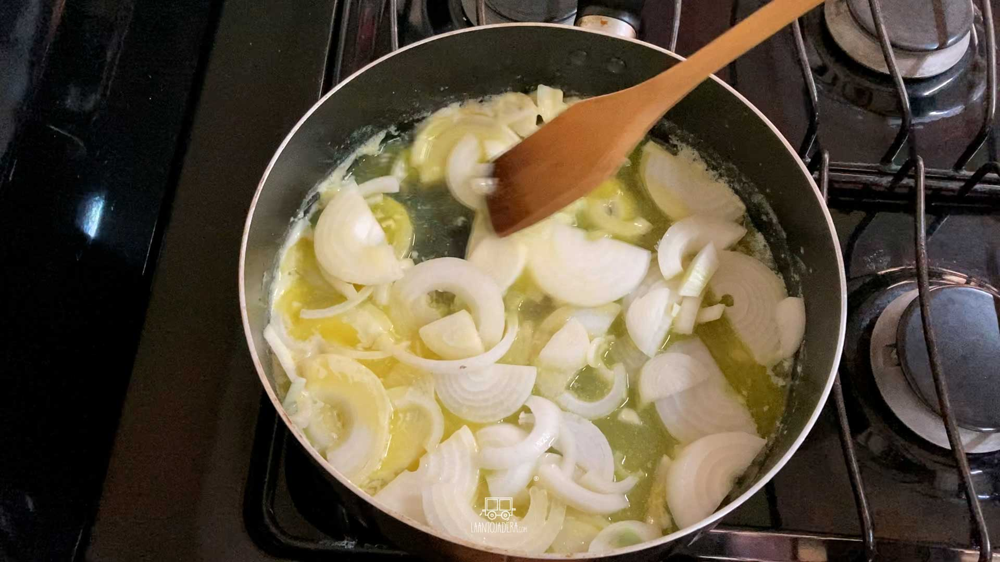
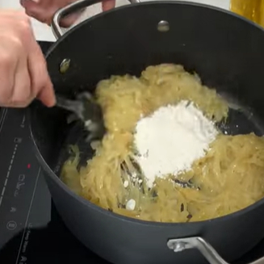
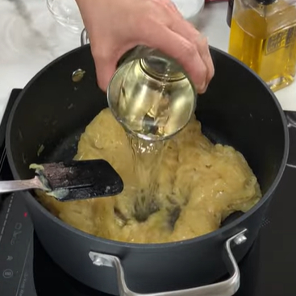
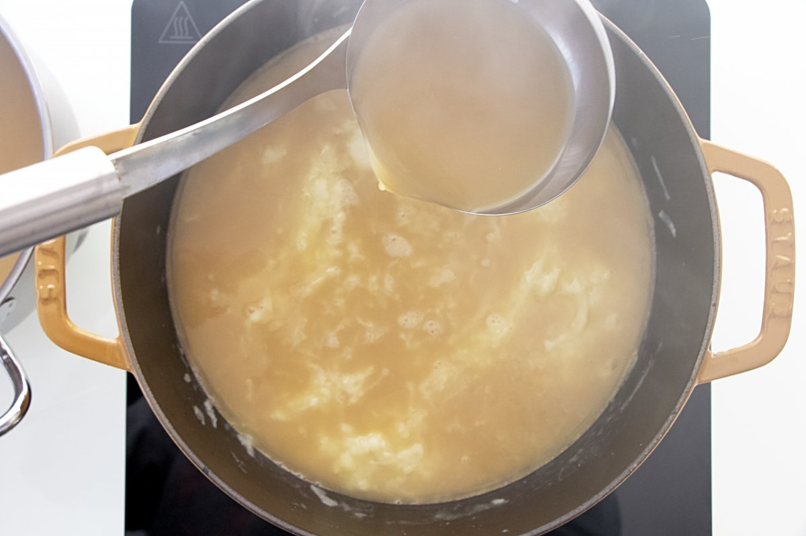
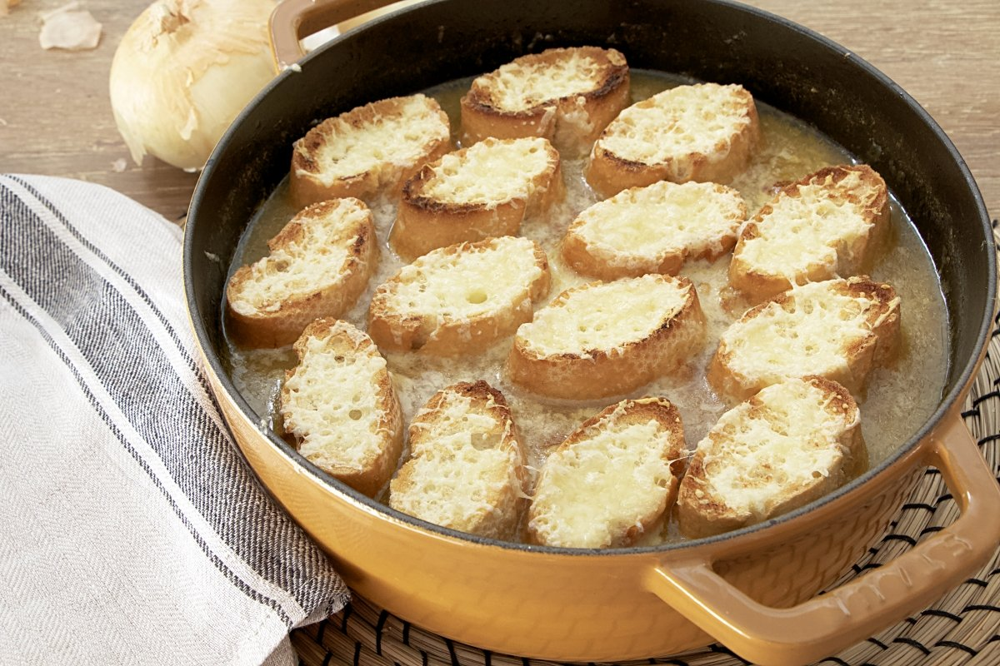

Sopa de cebolla (4 personas)

Ingredientes:
- 1Kg. de cebollas
- 2l. de caldo de carne
- 100gr. de mantequilla
- 1 cucharada de harina
- 100g. de queso emmental suizo o gruyére rallado
- Pan tostado en rebanadas
- Tomillo
- 1 hoja de laurel
- Pimienta
Proceso:
- Pelar y partir las cebollas en rodajas finas

- Rehogarlas con la mantequilla, sal y pimienta a fuego lento hasta que estén transparentes sin dorarse

- Añadir la harina sin dejar de remover

- Ponerlo en una cazuela con el caldo, el tomillo y el laurel

- Dejar cocer a fuego lento durante unos 15 minutos

- Poner las rebanas de pan encima, espolvorear el queso y gratinar al horno
